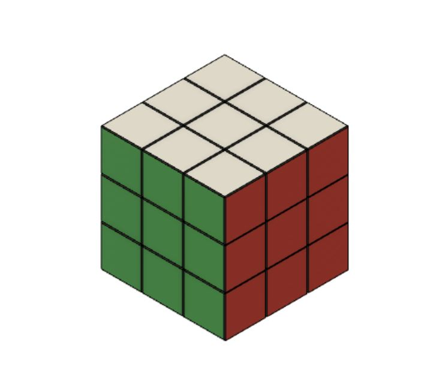
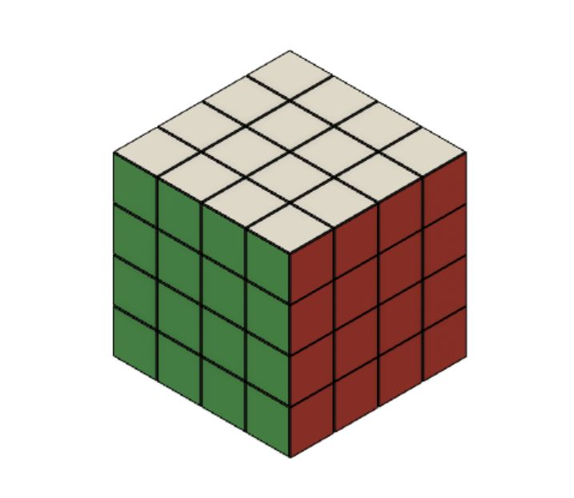
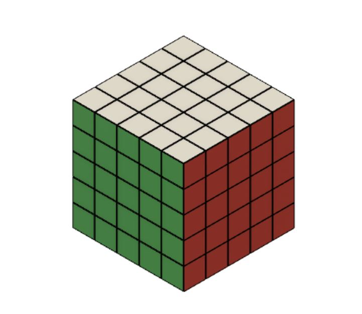
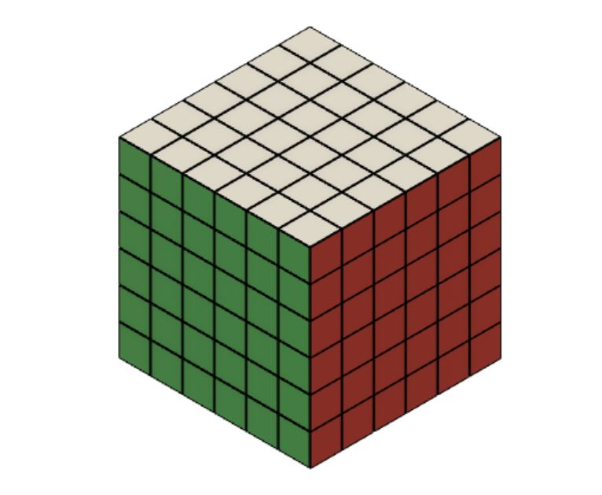

Diferent cube versions
Methods
Cubes
Good lerning tools
Jperm
Spedcubewiki
Rubrik
2x2
Rubiks Mini (även känd som Fickkuben eller Iskuben) är en mindre variant av Rubiks kub. Kuben är 2x2x2 block stor och består av 8 bitar, alla hörn.
3x3

Rubiks kub är ett tredimensionellt mekaniskt pussel som patenterades av den ungerske arkitekten och professorn Ernő Rubik 1975–1977.[1] Det tredimensionella pusslet uppfanns först i pedagogiskt syfte då Rubik vid tiden undervisade i design. Då han hade uppfunnit kuben gick det flera veckor innan han lyckades lösa den för första gången. Pusslet finns i flera olika storlekar och modeller, men den första och vanligaste kuben är 3×3×3 block stor med totalt 54 färgade rutor. Originalversionen är 5,7 cm hög.
4x4
The Rubik's Revenge (also known as the Master Cube) is a 4×4×4 version of Rubik's Cube. It was released in 1981. Invented by Péter Sebestény, the Rubik's Revenge was nearly called the Sebestény Cube until a somewhat last-minute decision changed the puzzle's name to attract fans of the original Rubik's Cube.[1] Unlike the original puzzle (and other odd-numbered puzzles like the 5×5×5 cube), it has no fixed facets: the centre facets (four per face) are free to move to different positions. Methods for solving the 3×3×3 cube work for the edges and corners of the 4×4×4 cube, as long as one has correctly identified the relative positions of the colours — since the centre facets can no longer be used for identification.

5x5

The Professor's Cube is a 3D combination puzzle, a 5×5×5 version of the original Rubik's Cube. It has qualities in common with both the 3×3×3 Rubik's Cube and the 4×4×4 Rubik's Revenge. The ability to know to solve 3x3x3 Rubik's Cube will help, but it is recommended to know both Cubes to be able to solve the Professor's Cube.
6X6
The V-Cube 6 is a 6×6×6 version of the original Rubik's Cube. The first mass-produced 6×6×6 was invented by Panagiotis Verdes and is produced by the Greek company Verdes Innovations SA. Other such puzzles have since been introduced by a number of Chinese companies,[1] some of which have mechanisms which improve on the original. Unlike the original puzzle (but like the 4×4×4 cube), it has no fixed facets: the center facets (16 per face) are free to move to different positions. Methods for solving the 3×3×3 cube work for the edges and corners of the 6×6×6 cube, as long as one has correctly identified the relative positions of the colors — since the center facets can no longer be used for identification.
